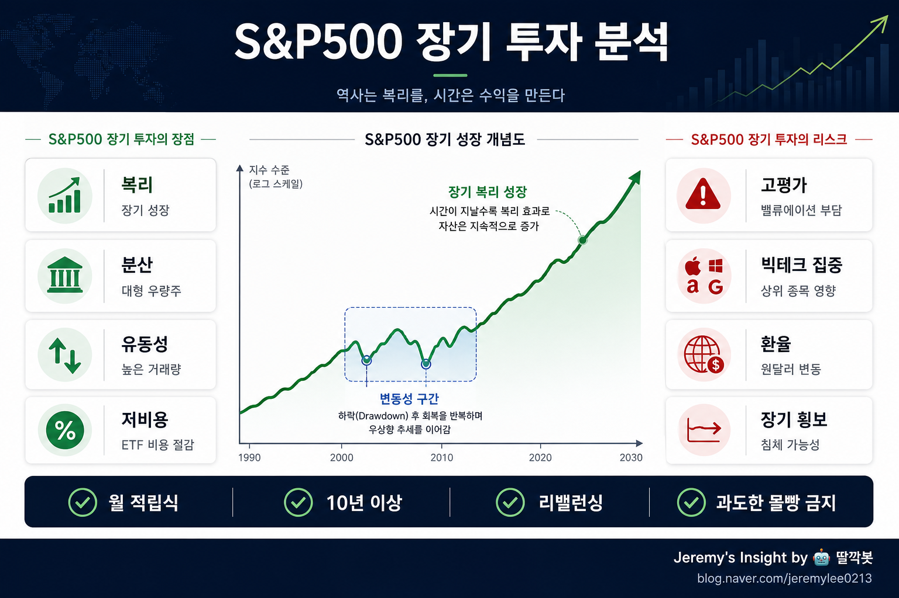

260502 S&P500 장기 투자 분석 보고서

핵심 결론
S&P500 장기 투자는 개인 투자자가 미국 경제 성장과 우량 기업의 이익 증가에 올라타는 가장 단순한 방법이다. 다만 “무조건 안전한 상품”이 아니라, 고평가·상위 빅테크 집중·환율·장기 횡보를 견뎌야 하는 주식형 자산이다. 10년 이상 월 적립식으로 접근하고, 생활비·비상금·현금흐름을 분리한 뒤 비중을 정하는 전략이 가장 현실적이다.
쉬운 설명
S&P500은 미국 대표 대형주 약 500개를 묶은 지수다. 애플, 마이크로소프트, 엔비디아, 아마존, 알파벳, 메타 같은 기업들이 포함되어 있고, 미국 기업 이익의 큰 흐름을 따라간다.
개인이 S&P500에 투자한다는 것은 특정 기업 하나를 맞히는 게임이 아니라, 미국 대형 기업 전체의 장기 성장에 분산 투자하는 것이다. 그래서 많은 투자자에게 “코어 자산”으로 쓰인다.
20년차 투자 관점의 핵심 분석
S&P500의 강점은 예측이 아니라 구조에 있다. 미국은 세계 최대 자본시장, 강한 주주환원 문화, 글로벌 기업 생태계, 혁신 기업의 상장 흡수 능력을 갖고 있다. 장기적으로 기업 이익이 증가하면 지수도 따라 올라갈 가능성이 높다.
하지만 좋은 자산과 좋은 매수 가격은 다르다. S&P500은 장기 우상향 자산이지만, 특정 시점에는 너무 비싸게 거래될 수 있다. 2000년 닷컴버블처럼 고점에서 사면 10년 가까이 성과가 부진할 수도 있다.
따라서 핵심은 “S&P500을 살까 말까”가 아니라 “어떤 비중으로, 어떤 기간 동안, 어떤 방식으로 버틸 것인가”다.
장기 투자 장점
| 장점 | 의미 | 투자자에게 주는 효과 |
|---|---|---|
| 분산투자 | 미국 대형 우량주 묶음 | 개별 기업 실패 리스크 감소 |
| 낮은 비용 | VOO, SPY, IVV 등 ETF 비용이 낮음 | 장기 복리에서 비용 손실 감소 |
| 높은 유동성 | 언제든 사고팔기 쉬움 | 위기 시 현금화 가능성 높음 |
| 자동 교체 | 부진한 기업은 빠지고 성장 기업이 편입됨 | 지수 자체가 시대 변화에 적응 |
| 장기 검증 | 수십 년간 대표 주식 지수 역할 | 투자 원칙을 세우기 쉬움 |
반드시 봐야 할 리스크
| 리스크 | 설명 | 대응 원칙 |
|---|---|---|
| 고평가 리스크 | 좋은 기업도 비싸게 사면 수익률이 낮아짐 | 일시 매수보다 분할 매수 |
| 빅테크 집중 | 상위 7~10개 기업 비중이 커짐 | S&P500만으로 완전 분산이라 착각 금지 |
| 장기 횡보 | 5~10년 수익률이 부진할 수 있음 | 최소 10년 이상 자금만 투입 |
| 환율 리스크 | 원화 투자자는 달러/원 환율 영향 큼 | 환율 고점 몰빵 주의 |
| 미국 편중 | 미국 시장이 항상 이긴다는 보장 없음 | 일부는 현금, 채권, 글로벌 자산과 병행 |
반대의견과 비판적 관점
S&P500 장기 투자에 대한 가장 강한 반론은 “이미 너무 많이 알려진 정답”이라는 점이다. 모두가 같은 지수 ETF를 사고, 상위 빅테크가 지수를 끌어올리는 구조가 심해지면 미래 기대수익률은 낮아질 수 있다.
또 다른 약점은 투자자가 실제로 장기 보유를 못 한다는 점이다. 이론상 장기 투자는 쉽지만, 실제로는 -30%, -40% 하락장에서 대부분이 비중을 줄이거나 매도를 고민한다. S&P500의 가장 큰 리스크는 지수 자체보다 투자자의 심리다.
마지막으로 한국 투자자에게는 환율이 중요하다. 달러 강세 시점에 과도하게 들어가면 지수는 올라도 원화 기준 체감 수익률이 기대보다 낮을 수 있다.
실패 시나리오
- 고점에서 일시금으로 과도하게 매수한다.
- 1~2년 뒤 손실이 나자 장기 전략을 포기한다.
- S&P500을 안전자산처럼 착각해 비상금까지 투입한다.
- 미국 빅테크 집중 리스크를 무시한다.
- 환율이 높은 시점에 달러 자산만 몰아서 산다.
이 경우 좋은 자산을 골랐더라도 실제 투자 성과는 나빠질 수 있다.
추천 전략
S&P500은 “빠르게 부자가 되는 자산”이 아니라 “오래 버틴 사람이 평균 이상의 성과를 가져가는 자산”에 가깝다.
실무적으로는 다음 방식이 가장 안정적이다.
- 월 적립식으로 매수한다.
- 최소 10년 이상 필요 없는 돈으로만 투자한다.
- 큰 조정장이 오면 매도를 고민하기보다 추가 매수 여력을 점검한다.
- 전체 자산의 100%를 S&P500에 몰지 않는다.
- 현금, 예금, 채권, 개별 성장주, 국내 자산과 역할을 나눈다.
- 원화 기준 투자자는 환율이 높은 구간의 일시금 투입을 조심한다.
투자자 유형별 판단
| 투자자 유형 | 적합도 | 권장 방식 |
|---|---|---|
| 초보 장기 투자자 | 높음 | VOO/IVV/SPY 중심 월 적립식 |
| 단기 수익 추구자 | 낮음 | S&P500보다 트레이딩 자산이 맞음 |
| 은퇴 준비 투자자 | 높음 | 채권·현금과 섞어 변동성 관리 |
| 공격적 성장 투자자 | 중간 | S&P500을 코어로 두고 일부 개별주 병행 |
| 환율 민감 투자자 | 중간 | 분할 환전 또는 원화 ETF 검토 |
최종 판단
S&P500 장기 투자는 여전히 개인 투자자의 기본값으로 유효하다. 다만 “미국은 무조건 오른다”가 아니라 “미국 대형 기업의 이익 성장에 장기간 분산 베팅한다”는 관점이어야 한다.
가장 좋은 사용법은 코어 자산이다. 포트폴리오의 중심에 두되, 현금흐름과 심리 안정 장치를 함께 설계해야 한다.
한 줄 결론: S&P500은 장기 투자에 좋은 선택지지만, 몰빵 상품이 아니라 오래 버틸 수 있게 비중을 조절해야 하는 핵심 자산이다.
투자 판단은 개인의 재무상황, 투자기간, 위험감수성에 따라 달라질 수 있으며, 이 보고서는 투자 권유가 아닌 분석 자료다.
Jeremy's Insight by 🤖 딸깍봇 https://blog.naver.com/jeremylee0213